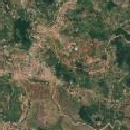
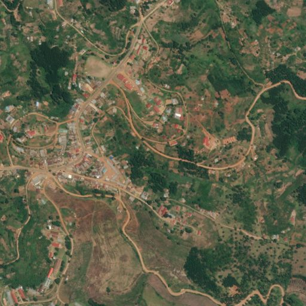
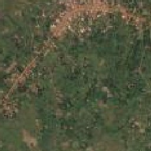
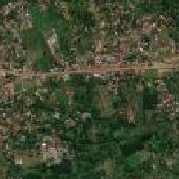
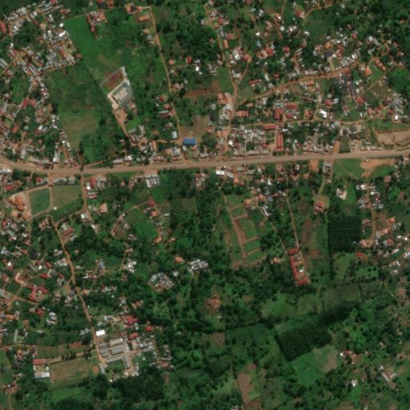
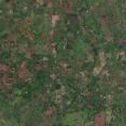
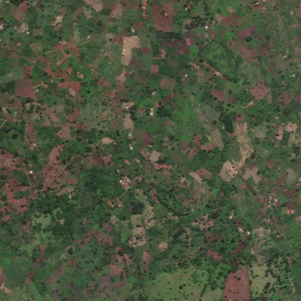

Efficient Poverty Mapping from High Resolution Remote Sensing Images — reimplementation report
Run 2026-09-16T20:42:15Z · 318 Uganda LSMS clusters · 16×16 acquisition grid · xView-finetuned YOLOv3 · Markdown · data.json · llms.txt
Code and project · Kaggle notebook — pipeline · Kaggle notebook — xView detector · Paper (AAAI 2021)
A from-scratch reimplementation of Ayush, Uzkent, Tanmay, Burke, Lobell, Ermon, “Efficient Poverty Mapping from High Resolution Remote Sensing Images”, AAAI 2021. A policy network sees only the free Sentinel-2 image of a survey cluster and decides which of its 256 high-resolution subtiles are worth paying for; a frozen YOLOv3 detector runs on the acquired subtiles only; a gradient-boosted regressor predicts cluster mean consumption from what came back. Trained with REINFORCE and a self-critical baseline on 318 Uganda LSMS clusters over 7 seeds, each with its own held-out 20%. Every number on this page is read straight out of data/data.json, produced by one Kaggle run on 2026-09-16.
Start here — what this is, without the jargon
The problem. Finding out how poor a place is normally means sending people door to door: the Uganda LSMS survey visits a cluster of households and records what they consume. That is slow and expensive, so there is a long line of research trying to predict it from satellite images instead. Free imagery — Sentinel-2, about 10 m per pixel — is blurry: you can see fields, water and roughly where a settlement is. Sharp imagery, where individual buildings and vehicles are visible, is sold by the tile, and covering a whole country with it costs real money.
The idea being tested. Don't buy all of it. Cut each surveyed area into 256 squares of about 70 m across, let a small neural network look only at the free blurry image, and have it decide which squares are worth paying for. An object detector then counts what it can see — buildings, vehicles, boats — in the purchased squares only, and a last model turns those counts into a guess at the area's average consumption. The chooser is trained by trial and error: rewarded for the objects it manages to capture, charged for every square it buys.
How to read the scores. Nearly everything below is reported as r²: the share of the differences between areas that the model explains. Zero means it does no better than guessing the same average everywhere; one would mean perfect. The numbers here sit near 0.33 — about a third of the variation, which is a real signal but nowhere near a replacement for a survey. Held out means those areas were never shown to the model during training, which is the honest way to score it.
What came out — two findings that point opposite ways. The choosing works: buying 13.7% of the sharp imagery captures 70.7% of every object the detector would have found on the full grid, so the network really has learned where the busy squares are. But the counts don't help the final answer: a model given only the free blurry image scores r² 0.326, and adding everything bought moves it to 0.314 — a change smaller than the run-to-run wobble of ±0.078. On this dataset the expensive imagery did not earn its keep.
Why that might be. Honestly, three candidates, and this run cannot separate them: 318 surveyed areas is a small sample; the free image may already encode the same thing the object counts do, since greenness and built-up texture track wealth directly; and at roughly one square kilometre per area, counting buildings may simply not add anything the blur has not already said. What is not the problem is the detector — it works (see below), and it finds 98,967 objects across the dataset.
This page runs no JavaScript. Every number, table and figure below is written into the HTML when the site is built, so it reads the same in a browser, in a crawler, and in curl. Hovering a bar, line or point shows its exact value.
Headline numbers
| Quantity | Value |
|---|---|
| Clusters | 318 Uganda LSMS clusters (89 urban, 229 rural) |
| Acquisition grid | 16×16 = 256 HR subtiles per cluster, 70 m each |
| Detector | YOLOv3, COCO init → xView fine-tune |
| Detector classes (L) | 10: Building, Fixed-wing Aircraft, Passenger Vehicle, Truck, Railway Vehicle, Maritime Vessel, Engineering Vehicle, Helipad, Vehicle Lot, Construction Site |
| Objects detected, full grid | 98,967 |
| Objects inside the acquired subtiles | 69,954 (70.7%) |
| HR imagery bought | 13.7% of subtiles, averaged over all clusters (15.7% on the held-out splits the r² values come from) |
| Clusters the policy bought nothing for | 114 of 318 |
| r² — RL policy, counts only | 0.033 ± 0.023 (log: 0.056) |
| r² — RL policy, counts + LR | 0.314 ± 0.078 (log: 0.375) |
| r² — LR only, nothing bought | 0.326 (log: 0.387) |
| r² — every subtile bought, counts only | 0.125 (log: 0.133) |
| r² — every subtile bought, counts + LR | 0.324 (log: 0.379) |
| Out-of-fold Pearson r (RL, counts + LR) | 0.461 over 254 clusters |
| Out-of-fold RMSE | 1.88 |
| Protocol | 7 seeds × 80/20 splits (~64 clusters held out per seed), Pearson r² on the held-out split |
| Run generated | 2026-09-16T20:42:15Z |
What this run shows
- The free low-resolution image explains almost everything this pipeline can explain. A regressor given only the Sentinel-2 descriptors reaches r² = 0.326. Adding the high-resolution object counts the policy paid for takes it to 0.314 (−0.012, against a between-seed sd of ±0.078); on log consumption the LR-only model is in fact the single best number on this page (0.387 vs 0.375 with counts). Within noise, the purchased imagery adds nothing to the free imagery on this dataset — the most important result here, and a negative one.
- The object counts do carry real signal, but they need coverage, not cleverness. Detecting on every one of the 256 subtiles and regressing on counts alone gives r² = 0.125 (0.133 on log consumption); the same features restricted to the 15.7% of subtiles the policy buys give 0.033. The λ sweep says the same thing monotonically: r²(counts only) falls from 0.265 at 49% of the imagery to 0.001 at 0.6%.
- Where the method is supposed to win — counts only, matched budget — it does win. On log consumption at a matched budget of 15.7% of the subtiles the ranking is RL policy (matched training) 0.067 > RL policy (ours) 0.056 > Stochastic 0.029 > Random 0.027 > Fixed (centre) 0.023 > Green tiles 0.019 > Counts prediction (CNN) 0.010. The learned policy is 1.9× the best hand-designed baseline (Stochastic 0.029), which is the ordering the paper predicts. The absolute level is not: 0.056 r² is not a usable poverty estimate on its own.
- What the policy buys is genuinely object-dense. For 13.7% of the high-resolution imagery it recovers 70.7% of all 98,967 objects the detector finds on the full grid — per-class recall 0.68 for buildings and 0.71 for trucks. Uniform sampling at the same budget would recover about 14%. The acquisition policy is not the weak link.
- Once the low-resolution features are in, which tiles you buy stops mattering. Learned, random, centre, distance-decayed, greenest-first and CNN-predicted acquisition all land within 0.018 r² of each other, and the nominal best is Counts prediction (CNN) — well inside the ±0.078 seed spread. Any ranking inside that block is noise, including rankings that favour the learned policy.
- The detector is a real overhead detector now. YOLOv3 initialised from COCO and fine-tuned on xView scores mAP@50 = 0.449 / mAP@50-95 = 0.235 on the xView validation split (best: Fixed-wing Aircraft 0.685, Passenger Vehicle 0.681, Railway Vehicle 0.628), and fires 98,967 objects across the Uganda clusters, 94,107 of them buildings. That closes the gap in the earlier COCO-only ablation, where the dominant classes were food textures rather than objects.
- SHAP agrees with the r² tables. The high-resolution count features carry 10.9% of total mean |SHAP| in the counts + LR regressor (largest single one: Maritime Vessel, 0.136, which given only 419 detections in total is more likely a proxy for water and bare ground than a real fleet); the rest sits on low-resolution colour and texture. The paper's interpretability story, where #Trucks and #Buildings drive the prediction, does not transfer to this dataset.
- One confound to carry with every number above. The high-resolution scrape mixes native ground sample distances (0.30 / 0.60 / 1.19 m/px) and native GSD correlates with the target at r = 0.441 (p = 1.6e-16). Every subtile covers the same 70 m footprint and is resized to 224 px before detection, so zoom does not change apparent object size (0.311 m/px effective for every cluster) — but it does change sharpness, and that correlation bounds how much of the signal could ride on sharpness rather than content.
Accuracy by acquisition policy and feature variant
Pearson r² on the held-out split, mean over 7 seeds. Every policy is given the same tile budget the learned policy used, so the columns are like-for-like. The paper's third variant, counts over all detector classes, is identical here — every class the detector can emit is already a feature class — so it is omitted rather than repeated.
In plain terms: Each pair of bars is one way of choosing which squares to buy. The lower bar in every pair is nearly the same length — once the free image is in the model, it barely matters which squares you bought, or whether you bought any at all (the vertical line). The upper bars are what the bought imagery achieves on its own, and they are short.
Target: consumption (pc_cons)
| Method | counts only | counts + LR | LR only | HR bought |
|---|---|---|---|---|
| No dropping (every subtile) | 0.125 | 0.324 | — | 100.0% |
| Fixed (centre) | 0.019 | 0.328 | — | 15.6% |
| Random | 0.028 | 0.331 | — | 15.6% |
| Stochastic | 0.038 | 0.326 | — | 15.6% |
| Green tiles | 0.021 | 0.319 | — | 15.6% |
| Counts prediction (CNN) | 0.014 | 0.332 | — | 15.6% |
| RL policy (ours) | 0.033 | 0.314 | — | 15.7% |
| LR only (nothing bought) | — | — | 0.326 | 0.0% |
All metrics, target consumption (pc_cons)
| Method | Feature variant | r² | ± sd | MSE | Explained var. | Spearman | HR frac. |
|---|---|---|---|---|---|---|---|
| No dropping (every subtile) | counts only (Eq. 1 literal) | 0.125 | 0.063 | 4.448 | -0.159 | 0.280 | 1.000 |
| RL policy (matched training) | counts only (Eq. 1 literal) | 0.039 | 0.031 | 5.002 | -0.284 | 0.258 | 0.157 |
| Stochastic | counts only (Eq. 1 literal) | 0.038 | 0.074 | 4.586 | -0.046 | -0.070 | 0.156 |
| RL policy (ours) | counts only (Eq. 1 literal) | 0.033 | 0.023 | 4.700 | -0.189 | 0.056 | 0.157 |
| Random | counts only (Eq. 1 literal) | 0.028 | 0.023 | 4.486 | -0.035 | 0.052 | 0.156 |
| Green tiles | counts only (Eq. 1 literal) | 0.021 | 0.033 | 4.719 | -0.097 | -0.015 | 0.156 |
| Fixed (centre) | counts only (Eq. 1 literal) | 0.019 | 0.018 | 4.677 | -0.076 | -0.002 | 0.156 |
| Counts prediction (CNN) | counts only (Eq. 1 literal) | 0.014 | 0.021 | 4.830 | -0.202 | -0.013 | 0.156 |
| Counts prediction (CNN) | counts + LR features | 0.332 | 0.095 | 2.965 | 0.301 | 0.516 | 0.156 |
| Random | counts + LR features | 0.331 | 0.113 | 2.970 | 0.302 | 0.514 | 0.156 |
| Fixed (centre) | counts + LR features | 0.328 | 0.100 | 2.978 | 0.301 | 0.513 | 0.156 |
| Stochastic | counts + LR features | 0.326 | 0.094 | 2.990 | 0.299 | 0.516 | 0.156 |
| No dropping (every subtile) | counts + LR features | 0.324 | 0.052 | 3.003 | 0.276 | 0.512 | 1.000 |
| Green tiles | counts + LR features | 0.319 | 0.091 | 3.022 | 0.290 | 0.503 | 0.156 |
| RL policy (ours) | counts + LR features | 0.314 | 0.078 | 3.061 | 0.277 | 0.513 | 0.157 |
| RL policy (matched training) | counts + LR features | 0.278 | 0.092 | 3.234 | 0.228 | 0.497 | 0.157 |
| LR only (nothing bought) | LR features only | 0.326 | 0.124 | 3.006 | 0.264 | 0.547 | 0.000 |
Target: log consumption
| Method | counts only | counts + LR | LR only | HR bought |
|---|---|---|---|---|
| No dropping (every subtile) | 0.133 | 0.379 | — | 100.0% |
| Fixed (centre) | 0.023 | 0.379 | — | 15.6% |
| Random | 0.027 | 0.375 | — | 15.6% |
| Stochastic | 0.029 | 0.371 | — | 15.6% |
| Green tiles | 0.019 | 0.368 | — | 15.6% |
| Counts prediction (CNN) | 0.010 | 0.377 | — | 15.6% |
| RL policy (ours) | 0.056 | 0.375 | — | 15.7% |
| LR only (nothing bought) | — | — | 0.387 | 0.0% |
All metrics, target log consumption
| Method | Feature variant | r² | ± sd | MSE | Explained var. | Spearman | HR frac. |
|---|---|---|---|---|---|---|---|
| No dropping (every subtile) | counts only (Eq. 1 literal) | 0.133 | 0.090 | 0.397 | -0.034 | 0.308 | 1.000 |
| RL policy (matched training) | counts only (Eq. 1 literal) | 0.067 | 0.043 | 0.424 | -0.117 | 0.266 | 0.157 |
| RL policy (ours) | counts only (Eq. 1 literal) | 0.056 | 0.041 | 0.413 | -0.043 | 0.145 | 0.157 |
| Stochastic | counts only (Eq. 1 literal) | 0.029 | 0.046 | 0.455 | -0.089 | 0.006 | 0.156 |
| Random | counts only (Eq. 1 literal) | 0.027 | 0.031 | 0.443 | -0.069 | 0.093 | 0.156 |
| Fixed (centre) | counts only (Eq. 1 literal) | 0.023 | 0.023 | 0.461 | -0.115 | 0.048 | 0.156 |
| Green tiles | counts only (Eq. 1 literal) | 0.019 | 0.025 | 0.472 | -0.145 | 0.001 | 0.156 |
| Counts prediction (CNN) | counts only (Eq. 1 literal) | 0.010 | 0.015 | 0.457 | -0.137 | 0.033 | 0.156 |
| Fixed (centre) | counts + LR features | 0.379 | 0.060 | 0.254 | 0.357 | 0.570 | 0.156 |
| No dropping (every subtile) | counts + LR features | 0.379 | 0.082 | 0.254 | 0.342 | 0.568 | 1.000 |
| Counts prediction (CNN) | counts + LR features | 0.377 | 0.071 | 0.254 | 0.352 | 0.565 | 0.156 |
| RL policy (matched training) | counts + LR features | 0.377 | 0.079 | 0.254 | 0.346 | 0.578 | 0.157 |
| Random | counts + LR features | 0.375 | 0.065 | 0.255 | 0.354 | 0.568 | 0.156 |
| RL policy (ours) | counts + LR features | 0.375 | 0.066 | 0.257 | 0.346 | 0.565 | 0.157 |
| Stochastic | counts + LR features | 0.371 | 0.060 | 0.257 | 0.349 | 0.566 | 0.156 |
| Green tiles | counts + LR features | 0.368 | 0.072 | 0.258 | 0.344 | 0.560 | 0.156 |
| LR only (nothing bought) | LR features only | 0.387 | 0.083 | 0.249 | 0.350 | 0.587 | 0.000 |
Cost / accuracy trade-off
λ is the cost coefficient in Rcost; 1 seed × 100 epochs per point, so these are noisier than the table above. Read the counts-only column: it is monotone in how much imagery gets bought.
In plain terms: Left to right, the policy is buying more imagery. The lower line climbs steeply — object counts get better simply by covering more ground, not by being cleverer. The upper line is nearly flat, because the free image was already doing that work.
| λ | HR fraction bought | r² counts only | r² counts + LR | r² counts only (log) | r² counts + LR (log) |
|---|---|---|---|---|---|
| 0.10 | 49.3% | 0.265 | 0.281 | 0.217 | 0.425 |
| 0.25 | 31.0% | 0.124 | 0.268 | 0.117 | 0.411 |
| 0.50 | 17.2% | 0.095 | 0.205 | 0.190 | 0.390 |
| 1.00 | 7.6% | 0.000 | 0.204 | 0.046 | 0.385 |
| 2.00 | 1.2% | 0.003 | 0.202 | 0.007 | 0.383 |
| 4.00 | 0.6% | 0.001 | 0.195 | 0.004 | 0.391 |
How the policy trains
In plain terms: Training is working as intended: the score it optimises goes up, while the share of imagery it buys falls. Nobody set that share by hand — it comes out of the price the policy is charged per square.
Predictions and where they land
In plain terms: On the left, a perfect model would put every point on the diagonal. The points sit below it at the right-hand end: the model is cautious, and it badly underestimates the best-off areas. On the right, each dot is one surveyed area in its real position, shaded by what the survey measured.
Left: held-out predictions against the survey value for the 254 clusters that were in a test split, pooled over seeds; the diagonal is parity, and the pooled correlation is r = 0.461 (RMSE 1.88). Right: the 318 clusters in place, shaded by measured consumption.
What the policy actually buys
In plain terms: Two views of the same place: the free blurry image, and the sharp one with the policy's choice drawn on it. Outlined squares were bought and examined; dimmed squares were never purchased.







Outlined cells were bought and sent to the detector; dimmed cells were never purchased. The last cluster is one the policy declined entirely — 114 of 318 end up that way at λ = 0.5, and are predicted from the free image alone.
Detector
YOLOv3 initialised from COCO weights and fine-tuned on xView parent classes, as the paper specifies. Features are genuine overhead object counts. Trained on 19,844 xView chips and validated on 2,480 in 8.2 GPU-hours: mAP@50 0.449, mAP@50-95 0.235, mean precision 0.565, mean recall 0.427. Child classes folded away from the xView label map: Helicopter, Storage Tank, Shipping container lot, Shipping Container, Pylon, Tower.
| xView parent class | Train instances | AP@50 | AP@50-95 | Detected, full grid | Detected, acquired subtiles | Recall |
|---|---|---|---|---|---|---|
| Building | 334,364 | 0.615 | 0.316 | 94,107 | 67,052 | 0.679 |
| Fixed-wing Aircraft | 1,267 | 0.685 | 0.399 | 12 | 12 | 0.823 |
| Passenger Vehicle | 207,193 | 0.681 | 0.273 | 2,309 | 1,509 | 0.661 |
| Truck | 31,278 | 0.423 | 0.214 | 1,486 | 958 | 0.710 |
| Railway Vehicle | 3,890 | 0.628 | 0.328 | 1 | 1 | 1.000 |
| Maritime Vessel | 5,108 | 0.426 | 0.200 | 419 | 158 | 0.493 |
| Engineering Vehicle | 4,736 | 0.340 | 0.189 | 144 | 101 | 0.744 |
| Helipad | 136 | 0.536 | 0.367 | 0 | 0 | 1.000 |
| Vehicle Lot | 5,079 | 0.141 | 0.059 | 65 | 42 | 0.716 |
| Construction Site | 1,741 | 0.011 | 0.003 | 424 | 121 | 0.454 |
Detection-count sensitivity to the confidence threshold (this run used 0.03)
| Confidence threshold | Detections | Per subtile | Subtiles with ≥1 object | Classes firing |
|---|---|---|---|---|
| 0.01 | 563,137 | 6.92 | 39.1% | 10 |
| 0.02 | 198,863 | 2.44 | 22.8% | 9 |
| 0.03 | 98,967 | 1.22 | 16.2% | 9 |
| 0.05 | 45,088 | 0.55 | 10.1% | 9 |
| 0.10 | 21,380 | 0.26 | 5.0% | 8 |
| 0.20 | 11,149 | 0.14 | 2.4% | 7 |
| 0.30 | 7,133 | 0.09 | 1.5% | 7 |
What the policy chooses not to look at
Objects per cluster the detector would have found in the dropped subtiles — the paper's Fig. 3 analogue. Recall is per class, over the acquired subtiles only.
In plain terms: If squares were picked at random, each bar would sit near the share of imagery bought. They sit far higher, which is the clearest evidence in this run that the policy is finding where things actually are.
| Class | Objects per cluster, full grid | Missed by the policy | Recall |
|---|---|---|---|
| Building | 295.93 | 95.06 | 0.679 |
| Fixed-wing Aircraft | 0.04 | 0.01 | 0.823 |
| Passenger Vehicle | 7.26 | 2.46 | 0.661 |
| Truck | 4.67 | 1.35 | 0.710 |
| Railway Vehicle | 0.00 | 0.00 | 1.000 |
| Maritime Vessel | 1.32 | 0.67 | 0.493 |
| Engineering Vehicle | 0.45 | 0.12 | 0.744 |
| Helipad | 0.00 | 0.00 | 1.000 |
| Vehicle Lot | 0.20 | 0.06 | 0.716 |
| Construction Site | 1.33 | 0.73 | 0.454 |
Feature importance (TreeSHAP, counts + LR regressor)
In plain terms: How much each input moves the final prediction. Almost all of the movement comes from the free image's colour and texture; the bought object counts barely register — the same conclusion as the tables, reached a different way.
All 30 features
| Feature | Kind | Mean |SHAP| | Share |
|---|---|---|---|
| LR_G_std_mean | LR descriptor | 0.3487 | 13.5% |
| LR_ExG_mean_mean | LR descriptor | 0.2586 | 10.0% |
| LR_B_mean_std | LR descriptor | 0.2072 | 8.1% |
| LR_R_std_mean | LR descriptor | 0.1989 | 7.7% |
| LR_bright_p10_std | LR descriptor | 0.1391 | 5.4% |
| Maritime Vessel | HR object count | 0.1358 | 5.3% |
| LR_R_mean_std | LR descriptor | 0.1244 | 4.8% |
| LR_B_std_mean | LR descriptor | 0.1201 | 4.7% |
| LR_G_mean_std | LR descriptor | 0.1079 | 4.2% |
| LR_bright_p90_mean | LR descriptor | 0.0932 | 3.6% |
| Building | HR object count | 0.0859 | 3.3% |
| LR_bright_p10_mean | LR descriptor | 0.0849 | 3.3% |
| LR_R_mean_mean | LR descriptor | 0.0771 | 3.0% |
| LR_ExG_mean_std | LR descriptor | 0.0770 | 3.0% |
| LR_R_std_std | LR descriptor | 0.0678 | 2.6% |
| LR_G_std_std | LR descriptor | 0.0674 | 2.6% |
| LR_G_mean_mean | LR descriptor | 0.0665 | 2.6% |
| LR_bright_mean_mean | LR descriptor | 0.0612 | 2.4% |
| LR_B_mean_mean | LR descriptor | 0.0561 | 2.2% |
| LR_bright_p90_std | LR descriptor | 0.0500 | 1.9% |
| LR_bright_mean_std | LR descriptor | 0.0482 | 1.9% |
| LR_B_std_std | LR descriptor | 0.0378 | 1.5% |
| Passenger Vehicle | HR object count | 0.0274 | 1.1% |
| Construction Site | HR object count | 0.0190 | 0.7% |
| Engineering Vehicle | HR object count | 0.0056 | 0.2% |
| Truck | HR object count | 0.0050 | 0.2% |
| Vehicle Lot | HR object count | 0.0029 | 0.1% |
| Fixed-wing Aircraft | HR object count | 0.0002 | 0.0% |
| Helipad | HR object count | 0.0000 | 0.0% |
| Railway Vehicle | HR object count | 0.0000 | 0.0% |
Method
The two-step episodic MDP
- Acquire. The policy fp sees the free low-resolution tile li and emits one Bernoulli probability per acquirable high-resolution region (8×8 policy tiles of 4 subtiles each).
- Detect. A frozen YOLOv3 runs on the acquired subtiles; dropped subtiles contribute a zero count vector (Eq. 1).
Reward R = Racc + Rcost, with Racc = −‖v − v̂‖1 penalising the objects the dropped subtiles would have contained, and Rcost = λ(1 − ‖a‖1/S) paying for restraint. λ = 0.5 in the headline run and is swept over 0.1, 0.25, 0.5, 1.0, 2.0, 4.0. Temperature scaling anneals exploration into exploitation across 150 epochs (α: 0.6 → 0.95).
Why two feature variants are reported
Equation 1 of the paper zeroes dropped subtiles at the detector stage. The problem statement then specifies a regressor predicting the poverty index from “Li and parts of Hi” — the free low-resolution image is a downstream input too, not only the policy's input. counts_only is the literal reading of Eq. 1; counts_plus_lr also hands the regressor the Sentinel-2 descriptors it already has for free (per-channel mean, sd, excess green and brightness percentiles, pooled over every subtile: 20 numbers). The gap between those two columns is the largest effect in this reimplementation, so both are always shown.
Baseline acquisition policies
Every baseline gets the same budget K the learned policy actually spent, so the comparison is like-for-like: no dropping (every subtile — the upper bound), fixed centre (the K most central), random, stochastic (distance-decayed random), green tiles (least-vegetated first, by low-resolution excess green) and counts prediction (a ResNet-18 regresses per-subtile object count from the low-resolution subtile; top-K predicted). LR only buys nothing at all. RL matched training is a diagnostic in which the regressor is trained on the same masked representation it is tested on, which separates the train/test feature mismatch from the acquisition decision itself. Nightlights and settlement-layer baselines are omitted: those auxiliary rasters are not part of this dataset.
Deviations from the paper
| Ayush et al. (AAAI 2021) | This run |
|---|---|
| 34×34 = 1156 HR subtiles per 10 km × 10 km cluster | 16×16 = 256 subtiles per 1.113 km square (compute budget) |
| YOLOv3 trained on xView, 10 parent classes | same — COCO weights fine-tuned on the 10 xView parents |
| DigitalGlobe 0.3 m HR imagery | own leafmap scrape, native GSD retained (0.30 / 0.60 / 1.19 m/px), every subtile resized to 224 px ⇒ 0.311 m/px effective |
| Sentinel-2 10 m LR imagery | own Sentinel-2 scrape, 9.51 m/px |
| N = 320 clusters (Uganda LSMS) | N = 318 clusters (Uganda LSMS) |
| Target: cluster mean consumption | same (pc_cons), plus log consumption (Jean et al. 2016 convention) |
| Regressor unspecified beyond f_r | gradient-boosted trees (300 × depth 3, lr 0.05, subsample 0.8) |
Caveats
- Absolute accuracy is low and the error bars are wide. The best held-out r² on this page is 0.332 on the linear target and 0.387 on the log target, from 318 clusters with only ~64 in each test fold. Between-seed sd is ±0.078, so treat any gap smaller than about 0.16 r² as noise.
- GSD confound. Native HR ground sample distance correlates with the target at r = 0.441. Resizing equalises apparent object size across clusters, but not image sharpness.
- 114 of 318 clusters are shown with nothing acquired. At λ = 0.5 the policy declines to buy anything for them, so their prediction rests on the low-resolution image alone.
- In-sample rows. Clusters marked “no (in-sample)” in the per-cluster table never landed in a test split across the seeds that ran. Their predicted value is fitted rather than held out, and they are excluded from the out-of-fold statistics above.
- Detection threshold. Counts are taken at confidence 0.03, low by natural-image standards, because the xView→Uganda domain shift pushes true detections far down the confidence ranking. The sensitivity table shows what other thresholds would have given.
- Not a like-for-like reproduction of the paper's headline number. A different HR imagery source, a much smaller cluster footprint, a coarser acquisition grid and a self-scraped label join all sit between this run and the published table.
Run configuration
Every config key
| Key | Value |
|---|---|
| GRID | 16 |
| S | 4 |
| L | 10 |
| YOLO_WEIGHTS | /kaggle/input/povrl-xview-yolov3/xview_yolov3_best.pt |
| CLUSTER_M | 1113.0 |
| XVIEW_GSD | 0.3 |
| YOLO_IMGSZ | 224 |
| YOLO_CONF | 0.03 |
| YOLO_CONF_RAW | 0.01 |
| YOLO_MAXDET | 300 |
| POLICY_IMGSZ | 64 |
| RL_EPOCHS | 150 |
| RL_LR | 0.0001 |
| RL_BATCH | 128 |
| ALPHA_START | 0.6 |
| ALPHA_END | 0.95 |
| LAMBDA | 0.5 |
| LAMBDA_SWEEP | 0.1, 0.25, 0.5, 1.0, 2.0, 4.0 |
| SWEEP_EPOCHS | 100 |
| SWEEP_SEEDS | 1 |
| TIME_BUDGET_H | 9.0 |
| SEEDS | 0, 1, 2, 3, 4, 5, 6 |
| TEST_FRAC | 0.2 |
| DETECTOR | xview |
Glossary
- Cluster
- A group of surveyed households treated as one place. The survey reports one consumption figure per cluster; this run has 318 of them.
- LSMS
- The World Bank's Living Standards Measurement Study — the household survey the target values come from.
- pc_cons
- Per-capita consumption: roughly what an average person in that cluster consumes, and the number every model here is trying to predict.
- Subtile
- One square of the grid each cluster is cut into — 256 of them per cluster, about 70 m across.
- LR / HR
- Low resolution (free Sentinel-2, ~9.5 m per pixel) and high resolution (the imagery being bought, 0.30–1.19 m per pixel).
- GSD
- Ground sample distance — how much ground one pixel covers. Smaller is sharper.
- r²
- Share of the variation between clusters that a model explains: 0 is no better than always guessing the average, 1 would be perfect.
- Spearman
- The same idea as r² but about rank order only — whether the model puts clusters in the right order, ignoring how far apart it thinks they are.
- Held out
- Scored on clusters the model never saw while training. Scores measured any other way are not trustworthy.
- Seed
- One complete training run with a different random start and a different train/test split. 7 were run; the spread between them is the error bar.
- λ (lambda)
- The price charged to the policy for each square it buys. Higher λ, less imagery bought.
- REINFORCE
- The reinforcement-learning method used: try something, see the reward, nudge the network towards whatever scored better.
- mAP@50
- The standard score for an object detector: how well its boxes match real objects. 0.449 here, on the xView benchmark.
- xView
- A large public dataset of labelled overhead imagery, used to teach the detector what buildings and vehicles look like from above.
- SHAP
- A method for asking how much each input contributed to a prediction.
Files published next to this page
report.md— this page as Markdownllms.txt— machine-readable index of the abovedata/data.json— the entire run as one JSON object — config, metrics, detector report, SHAP, per-cluster masks and predictionsdata/results_raw.csv— per-seed, per-method, per-variant, per-target metricsdata/lambda_sweep.csv— the cost/accuracy sweepdata/clusters.csv— per-cluster predictions, coordinates and budget spentdata/summary.png— the run's own summary figuredata/clusters/<cid>_lr.jpg— Sentinel-2 thumbnail, one per clusterdata/clusters/<cid>_hr.jpg— high-resolution thumbnail, one per cluster
{kind=link}
Per-cluster results
All 318 clusters, predictions from the RL policy with counts + LR features. CSV.
Show the full per-cluster table
| Cluster | Lat | Lon | Settlement | Households | True pc_cons | Predicted | Held out | Subtiles bought | HR GSD (m/px) | Objects acquired | Objects full grid |
|---|---|---|---|---|---|---|---|---|---|---|---|
| 1 | -0.2693 | 32.3097 | rural | 7 | 2.635 | 3.523 | yes | 0/256 | 1.19 | 0 | 101 |
| 2 | 0.3332 | 32.5707 | urban | 4 | 9.937 | 2.955 | yes | 40/256 | 1.19 | 14 | 124 |
| 3 | 0.3130 | 32.5691 | urban | 6 | 3.330 | 2.748 | no (in-sample) | 63/256 | 1.19 | 25 | 76 |
| 4 | 0.3031 | 32.5733 | urban | 2 | 6.717 | 2.344 | yes | 20/256 | 1.19 | 7 | 95 |
| 5 | 0.3458 | 32.5463 | urban | 5 | 4.224 | 2.057 | yes | 76/256 | 1.19 | 20 | 69 |
| 6 | 0.3780 | 32.5941 | urban | 3 | 5.511 | 4.742 | yes | 122/256 | 1.19 | 78 | 115 |
| 7 | 0.3714 | 32.5651 | urban | 5 | 6.852 | 5.425 | yes | 68/256 | 1.19 | 36 | 112 |
| 8 | 0.3651 | 32.5970 | urban | 6 | 9.639 | 4.312 | yes | 123/256 | 1.19 | 150 | 266 |
| 9 | 0.4425 | 32.7357 | urban | 5 | 5.027 | 1.602 | yes | 0/256 | 1.19 | 0 | 19 |
| 10 | 0.3625 | 32.5747 | urban | 1 | 5.326 | 4.539 | yes | 219/256 | 1.19 | 207 | 214 |
| 11 | 0.3460 | 32.5832 | urban | 4 | 4.928 | 5.839 | yes | 141/256 | 1.19 | 50 | 126 |
| 12 | 0.2820 | 32.6167 | urban | 7 | 4.734 | 4.102 | yes | 227/256 | 1.19 | 144 | 162 |
| 13 | 0.3143 | 32.5972 | urban | 6 | 3.454 | 3.412 | yes | 88/256 | 1.19 | 73 | 127 |
| 14 | 0.3032 | 32.6197 | urban | 7 | 3.794 | 4.115 | yes | 188/256 | 1.19 | 47 | 59 |
| 15 | 0.2921 | 32.5731 | urban | 8 | 3.469 | 4.598 | yes | 13/256 | 1.19 | 0 | 51 |
| 16 | 0.3058 | 32.5930 | urban | 6 | 5.920 | 2.515 | yes | 74/256 | 1.19 | 16 | 66 |
| 17 | 0.2732 | 32.6248 | urban | 10 | 5.172 | 3.859 | yes | 240/256 | 1.19 | 154 | 161 |
| 18 | 0.2952 | 32.5854 | urban | 4 | 6.739 | 2.484 | yes | 33/256 | 1.19 | 15 | 73 |
| 19 | 0.3265 | 32.5794 | urban | 5 | 4.394 | 6.362 | yes | 99/256 | 1.19 | 54 | 108 |
| 20 | 0.3448 | 32.5875 | urban | 6 | 5.784 | 7.054 | yes | 226/256 | 1.19 | 63 | 68 |
| 21 | 0.3677 | 32.6240 | urban | 4 | 7.748 | 7.192 | no (in-sample) | 142/256 | 1.19 | 217 | 270 |
| 22 | 0.3684 | 32.5903 | urban | 7 | 6.615 | 7.421 | yes | 112/256 | 1.19 | 229 | 382 |
| 23 | 0.3282 | 32.6341 | urban | 5 | 2.165 | 5.792 | yes | 222/256 | 1.19 | 100 | 108 |
| 24 | 0.3219 | 32.6381 | urban | 2 | 3.242 | 3.414 | no (in-sample) | 252/256 | 1.19 | 140 | 142 |
| 25 | 0.3572 | 32.7603 | urban | 5 | 3.861 | 6.048 | yes | 120/256 | 1.19 | 72 | 164 |
| 26 | 0.3059 | 32.5291 | urban | 6 | 3.989 | 3.867 | no (in-sample) | 91/256 | 1.19 | 97 | 134 |
| 27 | 0.2899 | 32.5530 | urban | 3 | 14.889 | 2.441 | yes | 55/256 | 1.19 | 14 | 99 |
| 28 | 0.3568 | 32.5571 | urban | 5 | 4.058 | 5.254 | yes | 170/256 | 1.19 | 84 | 94 |
| 29 | 0.3308 | 32.5421 | urban | 5 | 7.467 | 6.087 | no (in-sample) | 122/256 | 1.19 | 281 | 310 |
| 30 | 0.2898 | 32.5354 | urban | 1 | 8.763 | 3.727 | yes | 76/256 | 1.19 | 11 | 34 |
| 31 | 0.2793 | 32.5661 | urban | 2 | 9.292 | 6.787 | yes | 118/256 | 1.19 | 27 | 44 |
| 32 | 0.3325 | 32.5424 | urban | 3 | 5.088 | 5.984 | yes | 93/256 | 1.19 | 193 | 313 |
| 33 | 0.3171 | 32.5373 | urban | 2 | 1.550 | 7.111 | yes | 163/256 | 1.19 | 33 | 57 |
| 34 | 0.3046 | 32.5438 | urban | 5 | 2.037 | 5.921 | yes | 92/256 | 1.19 | 33 | 65 |
| 35 | 0.7799 | 31.9163 | rural | 11 | 1.545 | 1.893 | yes | 0/256 | 1.19 | 0 | 40 |
| 36 | 0.9190 | 31.5939 | rural | 10 | 1.722 | 1.862 | yes | 0/256 | 1.19 | 0 | 25 |
| 37 | 0.6964 | 32.5289 | urban | 8 | 2.798 | 2.403 | no (in-sample) | 29/256 | 1.19 | 25 | 57 |
| 38 | 0.5777 | 32.6473 | rural | 10 | 2.688 | 2.829 | no (in-sample) | 29/256 | 1.19 | 40 | 78 |
| 39 | 0.5744 | 32.6614 | rural | 16 | 3.271 | 2.508 | yes | 58/256 | 1.19 | 19 | 61 |
| 40 | 0.7637 | 32.5223 | rural | 13 | 2.608 | 2.345 | no (in-sample) | 6/256 | 1.19 | 0 | 15 |
| 41 | 0.6645 | 32.3307 | rural | 8 | 1.759 | 1.722 | no (in-sample) | 0/256 | 1.19 | 0 | 19 |
| 42 | 0.9983 | 32.1953 | rural | 8 | 1.593 | 1.562 | yes | 4/256 | 1.19 | 2 | 16 |
| 43 | -0.3431 | 31.7253 | urban | 5 | 10.861 | 4.176 | yes | 124/256 | 1.19 | 538 | 647 |
| 44 | -0.1421 | 31.8797 | urban | 4 | 3.055 | 3.276 | yes | 106/256 | 1.19 | 165 | 201 |
| 45 | -0.0618 | 31.7275 | rural | 11 | 1.667 | 2.406 | yes | 14/256 | 1.19 | 5 | 25 |
| 46 | -0.2432 | 31.6552 | rural | 10 | 2.019 | 2.014 | yes | 0/256 | 1.19 | 0 | 34 |
| 47 | -0.3476 | 31.5871 | rural | 10 | 2.044 | 2.612 | yes | 1/256 | 1.19 | 0 | 51 |
| 48 | -0.4712 | 31.3638 | rural | 11 | 1.817 | 2.593 | yes | 9/256 | 1.19 | 0 | 3 |
| 49 | -0.5224 | 31.3553 | rural | 11 | 1.724 | 3.337 | yes | 40/256 | 1.19 | 0 | 3 |
| 50 | -0.5768 | 31.6916 | rural | 8 | 2.003 | 2.034 | yes | 0/256 | 1.19 | 0 | 5 |
| 51 | -0.2295 | 31.9086 | rural | 11 | 1.862 | 2.361 | yes | 0/256 | 1.19 | 0 | 2 |
| 52 | -0.0237 | 31.8005 | rural | 9 | 2.210 | 2.046 | yes | 5/256 | 1.19 | 0 | 5 |
| 53 | -0.0248 | 31.8334 | rural | 12 | 2.167 | 2.539 | yes | 24/256 | 1.19 | 1 | 8 |
| 54 | 0.1273 | 31.8359 | rural | 13 | 2.393 | 2.940 | yes | 0/256 | 1.19 | 0 | 3 |
| 55 | 0.2561 | 31.7757 | rural | 12 | 1.791 | 2.643 | yes | 0/256 | 1.19 | 0 | 31 |
| 56 | 0.0716 | 32.0929 | rural | 11 | 2.738 | 1.692 | yes | 0/256 | 1.19 | 0 | 11 |
| 57 | 0.1967 | 32.2552 | rural | 8 | 2.095 | 2.125 | yes | 2/256 | 1.19 | 0 | 55 |
| 58 | 0.5727 | 31.3904 | urban | 9 | 5.898 | 5.797 | no (in-sample) | 170/256 | 1.19 | 396 | 426 |
| 59 | 0.3907 | 32.0738 | urban | 7 | 3.429 | 3.679 | yes | 113/256 | 1.19 | 128 | 152 |
| 60 | 0.3413 | 32.0911 | rural | 15 | 2.761 | 1.499 | yes | 0/256 | 1.19 | 0 | 11 |
| 61 | 0.2130 | 31.0526 | rural | 5 | 3.660 | 1.988 | yes | 16/256 | 1.19 | 9 | 29 |
| 62 | 0.5554 | 31.3957 | rural | 11 | 2.418 | 3.387 | yes | 229/256 | 1.19 | 476 | 482 |
| 63 | 0.5949 | 31.8173 | rural | 12 | 2.601 | 2.469 | yes | 0/256 | 1.19 | 0 | 28 |
| 64 | 0.4705 | 31.8339 | rural | 13 | 1.991 | 1.714 | yes | 0/256 | 1.19 | 0 | 11 |
| 65 | 0.5855 | 31.7295 | rural | 9 | 2.743 | 1.511 | yes | 0/256 | 1.19 | 0 | 16 |
| 66 | 0.4112 | 32.0475 | rural | 9 | 1.982 | 2.670 | yes | 154/256 | 1.19 | 166 | 200 |
| 67 | 0.5499 | 32.1664 | rural | 7 | 2.771 | 1.712 | yes | 9/256 | 1.19 | 1 | 19 |
| 68 | 0.3453 | 32.9086 | urban | 10 | 13.923 | 2.326 | yes | 0/256 | 1.19 | 0 | 84 |
| 69 | 0.4114 | 33.1414 | urban | 7 | 2.533 | 3.954 | yes | 13/256 | 1.19 | 10 | 75 |
| 70 | 0.3225 | 33.1571 | rural | 7 | 4.269 | 3.517 | no (in-sample) | 8/256 | 1.19 | 1 | 9 |
| 71 | 0.3697 | 33.1874 | rural | 11 | 1.315 | 1.689 | yes | 4/256 | 1.19 | 0 | 9 |
| 72 | 0.3763 | 33.1910 | rural | 10 | 1.602 | 1.631 | no (in-sample) | 0/256 | 1.19 | 0 | 8 |
| 73 | 0.1626 | 33.4727 | rural | 9 | 3.091 | 4.172 | yes | 0/256 | 1.19 | 0 | 4 |
| 74 | 0.4283 | 32.8014 | rural | 14 | 2.165 | 1.767 | yes | 1/256 | 1.19 | 0 | 34 |
| 75 | 0.4013 | 32.6670 | rural | 10 | 8.935 | 3.809 | yes | 71/256 | 1.19 | 121 | 232 |
| 76 | 0.5842 | 32.7907 | rural | 9 | 2.360 | 1.629 | yes | 2/256 | 1.19 | 1 | 29 |
| 77 | 0.6848 | 32.8292 | rural | 6 | 1.739 | 3.421 | yes | 134/256 | 1.19 | 306 | 327 |
| 78 | 0.6251 | 32.9196 | rural | 10 | 1.836 | 1.743 | yes | 4/256 | 1.19 | 0 | 21 |
| 79 | -0.5381 | 31.6338 | urban | 11 | 5.884 | 5.634 | no (in-sample) | 16/256 | 1.19 | 2 | 6 |
| 80 | -0.2873 | 31.2225 | rural | 10 | 2.606 | 1.815 | yes | 4/256 | 1.19 | 1 | 10 |
| 81 | -0.8606 | 31.7036 | rural | 15 | 2.977 | 3.353 | yes | 0/256 | 1.19 | 0 | 160 |
| 82 | -0.5176 | 31.1816 | rural | 11 | 1.263 | 2.256 | yes | 36/256 | 1.19 | 2 | 9 |
| 83 | -0.3879 | 31.5214 | rural | 13 | 1.988 | 2.150 | yes | 8/256 | 1.19 | 1 | 5 |
| 84 | -0.3946 | 31.7517 | rural | 7 | 3.434 | 2.448 | yes | 49/256 | 1.19 | 64 | 102 |
| 85 | 0.1454 | 31.2311 | rural | 8 | 2.602 | 1.690 | yes | 18/256 | 1.19 | 1 | 15 |
| 86 | -0.2922 | 31.4787 | rural | 8 | 2.686 | 1.407 | yes | 23/256 | 1.19 | 0 | 6 |
| 87 | -0.1515 | 31.4341 | rural | 11 | 1.944 | 1.949 | no (in-sample) | 2/256 | 1.19 | 0 | 1 |
| 88 | 0.7266 | 32.9185 | urban | 8 | 2.510 | 2.261 | no (in-sample) | 8/256 | 1.19 | 8 | 64 |
| 89 | 0.8272 | 32.8441 | rural | 9 | 2.474 | 1.884 | yes | 0/256 | 1.19 | 0 | 21 |
| 90 | 0.7329 | 32.9588 | rural | 8 | 2.481 | 2.208 | yes | 0/256 | 1.19 | 0 | 22 |
| 91 | 0.0677 | 32.4716 | urban | 6 | 2.926 | 4.777 | yes | 211/256 | 1.19 | 193 | 200 |
| 92 | 0.2186 | 32.5399 | urban | 3 | 3.813 | 3.616 | yes | 136/256 | 1.19 | 59 | 127 |
| 93 | 0.3501 | 32.6700 | urban | 8 | 4.319 | 4.231 | yes | 224/256 | 1.19 | 234 | 269 |
| 94 | 0.3760 | 32.5359 | urban | 5 | 6.971 | 4.734 | yes | 115/256 | 1.19 | 13 | 45 |
| 95 | 0.2618 | 32.5568 | urban | 5 | 5.507 | 5.319 | no (in-sample) | 196/256 | 1.19 | 148 | 162 |
| 96 | 0.1713 | 32.3475 | rural | 6 | 2.889 | 1.881 | yes | 0/256 | 1.19 | 0 | 41 |
| 97 | 0.0505 | 32.5377 | rural | 7 | 4.021 | 4.226 | no (in-sample) | 0/256 | 1.19 | 0 | 0 |
| 98 | 0.2657 | 32.4628 | rural | 9 | 11.352 | 10.003 | no (in-sample) | 90/256 | 1.19 | 49 | 62 |
| 99 | 0.1609 | 32.5529 | rural | 11 | 3.965 | 4.145 | yes | 148/256 | 1.19 | 38 | 44 |
| 100 | 0.2428 | 32.3446 | rural | 8 | 3.660 | 2.168 | yes | 5/256 | 1.19 | 5 | 63 |
| 101 | 0.3477 | 32.6830 | rural | 7 | 4.225 | 4.132 | no (in-sample) | 203/256 | 0.30 | 1,892 | 1,915 |
| 102 | 0.3496 | 32.5372 | rural | 8 | 3.621 | 5.413 | yes | 78/256 | 0.30 | 5,076 | 11,733 |
| 103 | 0.2559 | 32.6040 | rural | 6 | 5.582 | 4.214 | yes | 256/256 | 0.30 | 12,749 | 12,749 |
| 104 | 0.2745 | 32.5473 | rural | 7 | 5.425 | 5.869 | yes | 131/256 | 0.30 | 4,763 | 8,807 |
| 105 | 0.4396 | 33.7790 | rural | 14 | 1.167 | 1.611 | no (in-sample) | 45/256 | 0.60 | 301 | 375 |
| 106 | 0.3174 | 33.8831 | rural | 10 | 1.116 | 1.635 | yes | 15/256 | 0.60 | 20 | 79 |
| 107 | 0.7122 | 33.6940 | rural | 10 | 1.193 | 1.994 | yes | 0/256 | 0.60 | 0 | 11 |
| 108 | 0.1040 | 33.7831 | rural | 2 | 0.626 | 1.217 | no (in-sample) | 4/256 | 0.60 | 4 | 25 |
| 109 | 0.4677 | 34.0917 | urban | 3 | 2.107 | 3.442 | yes | 251/256 | 0.60 | 16,366 | 16,370 |
| 110 | 0.4907 | 34.0918 | rural | 8 | 1.182 | 2.166 | yes | 14/256 | 0.60 | 198 | 546 |
| 111 | 0.3890 | 34.0578 | rural | 10 | 1.043 | 3.219 | yes | 5/256 | 0.60 | 1 | 54 |
| 112 | 0.6159 | 33.4701 | urban | 4 | 2.467 | 2.675 | yes | 188/256 | 0.60 | 3,062 | 3,245 |
| 113 | 0.6237 | 33.4741 | urban | 10 | 5.206 | 3.860 | yes | 169/256 | 0.60 | 6,039 | 6,351 |
| 114 | 0.5516 | 33.6189 | rural | 9 | 0.965 | 1.243 | no (in-sample) | 24/256 | 0.60 | 103 | 157 |
| 115 | 0.8874 | 33.5106 | rural | 9 | 1.896 | 3.393 | yes | 80/256 | 0.60 | 383 | 524 |
| 116 | 0.5959 | 33.4174 | rural | 10 | 1.882 | 1.323 | yes | 0/256 | 0.60 | 0 | 19 |
| 117 | 0.6750 | 33.5199 | rural | 6 | 1.042 | 1.488 | yes | 0/256 | 0.60 | 0 | 40 |
| 118 | 1.0166 | 33.3280 | rural | 8 | 1.457 | 2.452 | yes | 20/256 | 0.60 | 14 | 65 |
| 119 | 0.7754 | 33.3475 | rural | 12 | 2.541 | 1.252 | yes | 0/256 | 0.60 | 0 | 12 |
| 120 | 0.5124 | 32.9574 | urban | 8 | 4.694 | 4.367 | no (in-sample) | 0/256 | 0.60 | 0 | 0 |
| 121 | 0.4324 | 33.2407 | urban | 4 | 2.366 | 3.789 | yes | 13/256 | 0.30 | 141 | 316 |
| 122 | 0.4855 | 33.2386 | urban | 8 | 6.151 | 4.519 | no (in-sample) | 92/256 | 0.30 | 498 | 725 |
| 123 | 0.6173 | 33.3465 | rural | 10 | 1.489 | 1.587 | yes | 0/256 | 0.60 | 0 | 26 |
| 124 | 0.5513 | 33.1259 | rural | 8 | 1.435 | 1.533 | yes | 0/256 | 0.60 | 0 | 45 |
| 125 | 0.5583 | 33.1102 | rural | 9 | 1.609 | 2.209 | yes | 0/256 | 0.60 | 0 | 25 |
| 126 | 0.8842 | 33.2027 | urban | 8 | 2.365 | 2.076 | no (in-sample) | 8/256 | 0.60 | 16 | 28 |
| 127 | 1.2092 | 33.0479 | rural | 10 | 1.190 | 2.883 | yes | 0/256 | 0.60 | 0 | 40 |
| 128 | 1.0930 | 33.1745 | rural | 13 | 1.042 | 1.452 | yes | 20/256 | 0.60 | 10 | 30 |
| 129 | 1.0087 | 33.0078 | rural | 13 | 1.320 | 2.096 | yes | 0/256 | 0.60 | 0 | 9 |
| 130 | 0.9828 | 33.3833 | rural | 12 | 1.418 | 1.458 | no (in-sample) | 9/256 | 0.60 | 11 | 25 |
| 131 | 1.0888 | 33.4022 | rural | 8 | 1.014 | 1.166 | no (in-sample) | 62/256 | 0.60 | 89 | 102 |
| 132 | 0.7740 | 33.0748 | rural | 9 | 1.389 | 2.514 | yes | 0/256 | 0.60 | 0 | 81 |
| 133 | 1.3316 | 34.6609 | rural | 7 | 1.519 | 1.999 | yes | 15/256 | 0.60 | 36 | 166 |
| 134 | 1.3822 | 34.4045 | rural | 8 | 1.143 | 2.037 | yes | 77/256 | 0.60 | 135 | 247 |
| 135 | 2.0310 | 33.5633 | rural | 4 | 1.278 | 1.612 | yes | 0/256 | 0.60 | 0 | 1 |
| 136 | 1.8880 | 33.9395 | rural | 11 | 1.385 | 1.410 | no (in-sample) | 7/256 | 0.60 | 1 | 5 |
| 137 | 1.6694 | 33.9609 | rural | 11 | 1.610 | 1.451 | yes | 0/256 | 0.60 | 0 | 3 |
| 138 | 1.2057 | 33.7217 | urban | 11 | 5.832 | 1.846 | yes | 4/256 | 0.60 | 2 | 17 |
| 139 | 1.1997 | 34.1584 | rural | 9 | 1.358 | 1.623 | yes | 0/256 | 0.60 | 0 | 31 |
| 140 | 1.3766 | 33.8751 | rural | 17 | 1.435 | 1.503 | yes | 0/256 | 0.60 | 0 | 5 |
| 141 | 1.5316 | 34.0501 | rural | 13 | 1.297 | 1.625 | yes | 0/256 | 0.60 | 0 | 2 |
| 142 | 1.6365 | 33.7911 | rural | 12 | 1.214 | 2.702 | yes | 19/256 | 0.60 | 13 | 32 |
| 143 | 1.0735 | 34.1650 | urban | 4 | 2.866 | 2.871 | yes | 53/256 | 0.60 | 206 | 3,326 |
| 144 | 1.0708 | 34.1722 | urban | 5 | 8.166 | 3.118 | yes | 51/256 | 0.60 | 160 | 962 |
| 145 | 0.8253 | 34.2724 | rural | 12 | 1.253 | 1.385 | yes | 0/256 | 0.60 | 0 | 27 |
| 146 | 0.8027 | 34.3096 | rural | 7 | 0.719 | 1.547 | yes | 6/256 | 0.60 | 2 | 46 |
| 147 | 0.8759 | 34.3764 | rural | 10 | 1.342 | 2.301 | yes | 4/256 | 0.60 | 0 | 57 |
| 148 | 0.8087 | 34.3363 | rural | 10 | 0.866 | 1.676 | yes | 15/256 | 0.60 | 4 | 43 |
| 149 | 0.8576 | 34.3665 | rural | 8 | 1.365 | 1.182 | no (in-sample) | 37/256 | 0.60 | 38 | 74 |
| 150 | 0.8695 | 34.3813 | rural | 8 | 1.213 | 2.350 | yes | 24/256 | 0.60 | 20 | 76 |
| 151 | 1.0295 | 34.2462 | rural | 12 | 0.848 | 1.890 | yes | 0/256 | 0.60 | 0 | 6 |
| 152 | 1.0495 | 34.3647 | rural | 9 | 1.382 | 1.442 | no (in-sample) | 76/256 | 0.60 | 230 | 356 |
| 153 | 1.1839 | 33.7196 | urban | 4 | 2.540 | 2.277 | no (in-sample) | 36/256 | 0.60 | 54 | 139 |
| 154 | 1.1494 | 33.9206 | rural | 9 | 1.067 | 1.184 | yes | 6/256 | 0.60 | 2 | 35 |
| 155 | 1.2345 | 33.6901 | rural | 11 | 1.697 | 1.334 | yes | 10/256 | 0.60 | 1 | 32 |
| 156 | 1.2608 | 33.7971 | rural | 10 | 1.057 | 1.272 | no (in-sample) | 4/256 | 0.60 | 8 | 46 |
| 157 | 1.2784 | 34.1227 | rural | 9 | 1.130 | 1.534 | yes | 2/256 | 0.60 | 1 | 48 |
| 158 | 1.6926 | 33.4459 | urban | 12 | 2.732 | 1.897 | yes | 3/256 | 0.60 | 1 | 31 |
| 159 | 1.5619 | 33.3033 | rural | 11 | 1.503 | 1.734 | no (in-sample) | 37/256 | 0.60 | 43 | 60 |
| 160 | 1.5788 | 33.5110 | rural | 10 | 1.814 | 1.520 | yes | 4/256 | 0.60 | 0 | 3 |
| 161 | 1.7400 | 33.5787 | rural | 14 | 1.793 | 1.682 | no (in-sample) | 10/256 | 0.60 | 13 | 49 |
| 162 | 1.6977 | 33.6901 | rural | 11 | 2.054 | 1.897 | yes | 25/256 | 0.60 | 3 | 76 |
| 163 | 0.7111 | 34.1736 | urban | 4 | 1.068 | 1.144 | yes | 15/256 | 0.60 | 45 | 82 |
| 164 | 1.0185 | 34.0729 | rural | 8 | 0.830 | 1.150 | yes | 7/256 | 0.60 | 3 | 40 |
| 165 | 0.8194 | 34.0941 | rural | 9 | 1.376 | 2.607 | yes | 22/256 | 0.60 | 11 | 48 |
| 166 | 0.6559 | 34.0533 | rural | 12 | 1.320 | 1.512 | no (in-sample) | 2/256 | 0.60 | 2 | 94 |
| 167 | 0.6187 | 33.7168 | rural | 12 | 3.046 | 1.505 | yes | 8/256 | 0.60 | 16 | 110 |
| 168 | 0.6962 | 34.1094 | rural | 8 | 1.930 | 2.250 | yes | 26/256 | 0.60 | 33 | 142 |
| 169 | 0.5925 | 33.3904 | rural | 16 | 1.626 | 1.774 | no (in-sample) | 6/256 | 0.60 | 23 | 81 |
| 170 | 0.4237 | 33.6122 | rural | 4 | 0.805 | 1.572 | yes | 4/256 | 0.60 | 3 | 31 |
| 171 | 1.2457 | 34.2636 | urban | 7 | 2.481 | 1.612 | yes | 0/256 | 0.60 | 0 | 44 |
| 172 | 1.2007 | 34.2567 | rural | 9 | 1.074 | 2.253 | yes | 0/256 | 0.60 | 0 | 16 |
| 173 | 1.0691 | 34.0936 | rural | 11 | 1.920 | 1.704 | no (in-sample) | 9/256 | 0.60 | 11 | 48 |
| 174 | 1.1520 | 34.3267 | rural | 10 | 1.109 | 1.994 | yes | 4/256 | 0.60 | 6 | 106 |
| 175 | 1.3748 | 34.3020 | rural | 10 | 0.898 | 1.961 | yes | 9/256 | 0.60 | 2 | 21 |
| 176 | 3.3878 | 31.9688 | rural | 10 | 1.376 | 1.864 | yes | 0/256 | 0.60 | 0 | 1 |
| 177 | 2.0181 | 32.5516 | urban | 8 | 6.307 | 1.353 | yes | 0/256 | 0.60 | 0 | 3 |
| 178 | 2.4070 | 32.7478 | rural | 14 | 1.008 | 2.089 | yes | 0/256 | 0.60 | 0 | 38 |
| 179 | 2.3150 | 32.8708 | rural | 17 | 1.235 | 1.559 | yes | 2/256 | 0.60 | 9 | 85 |
| 180 | 2.4246 | 32.8517 | rural | 11 | 1.028 | 3.015 | yes | 4/256 | 0.60 | 2 | 44 |
| 181 | 1.9447 | 32.6390 | rural | 10 | 1.114 | 1.244 | no (in-sample) | 0/256 | 0.60 | 0 | 2 |
| 182 | 2.0583 | 32.6490 | rural | 9 | 1.980 | 1.191 | yes | 4/256 | 0.60 | 3 | 37 |
| 183 | 1.8396 | 32.4532 | rural | 12 | 2.115 | 1.660 | yes | 0/256 | 0.60 | 0 | 3 |
| 184 | 2.0334 | 32.8326 | rural | 2 | 1.584 | 1.878 | yes | 4/256 | 0.60 | 2 | 36 |
| 185 | 2.3525 | 32.2548 | rural | 10 | 1.078 | 2.168 | yes | 0/256 | 0.60 | 0 | 7 |
| 186 | 2.3649 | 32.6033 | rural | 9 | 0.825 | 1.971 | yes | 0/256 | 0.60 | 0 | 1 |
| 187 | 2.3364 | 32.4425 | rural | 13 | 0.943 | 2.404 | yes | 0/256 | 0.60 | 0 | 4 |
| 188 | 2.1324 | 32.5402 | rural | 13 | 1.194 | 1.301 | yes | 2/256 | 0.60 | 0 | 13 |
| 189 | 1.9398 | 32.4177 | rural | 12 | 1.981 | 1.327 | yes | 0/256 | 0.60 | 0 | 4 |
| 190 | 2.7805 | 31.0522 | urban | 12 | 2.624 | 1.720 | yes | 1/256 | 0.60 | 2 | 11 |
| 191 | 3.4031 | 30.9614 | urban | 6 | 1.399 | 2.864 | yes | 181/256 | 0.60 | 505 | 533 |
| 192 | 3.0825 | 30.9460 | rural | 8 | 0.969 | 1.812 | yes | 24/256 | 0.60 | 7 | 49 |
| 193 | 2.9912 | 30.9618 | rural | 9 | 2.924 | 2.744 | yes | 54/256 | 0.60 | 15 | 69 |
| 194 | 3.4425 | 30.9457 | rural | 11 | 2.292 | 1.971 | yes | 0/256 | 0.60 | 0 | 23 |
| 195 | 2.6194 | 31.1491 | rural | 10 | 1.822 | 1.371 | yes | 0/256 | 0.60 | 0 | 0 |
| 196 | 3.1920 | 30.9518 | rural | 10 | 2.016 | 2.302 | yes | 3/256 | 0.60 | 0 | 33 |
| 197 | 2.9998 | 31.1152 | rural | 11 | 2.477 | 2.553 | yes | 0/256 | 0.60 | 0 | 7 |
| 198 | 2.9842 | 30.9922 | rural | 13 | 2.573 | 1.645 | yes | 0/256 | 0.60 | 0 | 11 |
| 199 | 3.0664 | 31.1149 | rural | 11 | 1.734 | 1.894 | no (in-sample) | 4/256 | 0.60 | 3 | 14 |
| 200 | 3.2452 | 31.1627 | rural | 10 | 1.062 | 1.142 | no (in-sample) | 0/256 | 0.60 | 0 | 12 |
| 201 | 2.7466 | 30.9555 | rural | 9 | 1.470 | 1.969 | yes | 0/256 | 0.60 | 0 | 8 |
| 202 | 2.5803 | 32.4758 | urban | 11 | 3.569 | 1.754 | yes | 3/256 | 0.60 | 0 | 4 |
| 203 | 2.8056 | 32.3546 | urban | 15 | 1.713 | 1.522 | yes | 0/256 | 0.30 | 0 | 45 |
| 204 | 2.8078 | 32.3654 | urban | 15 | 2.289 | 1.902 | yes | 0/256 | 0.30 | 0 | 4 |
| 205 | 2.8674 | 32.2807 | rural | 10 | 0.871 | 1.409 | yes | 0/256 | 0.60 | 0 | 22 |
| 206 | 2.5309 | 32.3706 | rural | 12 | 1.168 | 1.086 | no (in-sample) | 0/256 | 0.60 | 0 | 9 |
| 207 | 2.8816 | 32.1545 | rural | 5 | 0.521 | 1.095 | no (in-sample) | 4/256 | 0.60 | 0 | 59 |
| 208 | 3.2937 | 32.9061 | urban | 11 | 3.397 | 2.168 | yes | 45/256 | 0.60 | 184 | 293 |
| 209 | 3.4982 | 34.1300 | urban | 7 | 2.069 | 1.726 | no (in-sample) | 0/256 | 0.60 | 0 | 1 |
| 210 | 3.6923 | 33.9645 | rural | 8 | 0.635 | 0.955 | no (in-sample) | 0/256 | 0.60 | 0 | 1 |
| 211 | 3.6068 | 34.1264 | rural | 11 | 0.706 | 1.673 | yes | 1/256 | 0.60 | 0 | 0 |
| 212 | 3.5176 | 34.1604 | rural | 8 | 0.645 | 2.330 | yes | 0/256 | 0.60 | 0 | 9 |
| 213 | 3.0383 | 34.1470 | rural | 8 | 0.730 | 0.656 | no (in-sample) | 10/256 | 0.60 | 4 | 13 |
| 214 | 3.0411 | 34.0553 | rural | 9 | 0.436 | 1.190 | yes | 0/256 | 0.60 | 0 | 3 |
| 215 | 2.2608 | 32.9421 | urban | 7 | 1.858 | 1.783 | no (in-sample) | 16/256 | 0.60 | 20 | 104 |
| 216 | 2.3926 | 32.7717 | urban | 12 | 2.608 | 1.367 | yes | 0/256 | 0.60 | 0 | 45 |
| 217 | 2.3195 | 32.9938 | urban | 8 | 3.198 | 1.998 | yes | 0/256 | 0.60 | 0 | 44 |
| 218 | 2.1168 | 33.0649 | rural | 13 | 1.771 | 1.631 | yes | 0/256 | 0.60 | 0 | 7 |
| 219 | 2.0000 | 33.2409 | rural | 11 | 0.981 | 1.423 | yes | 0/256 | 0.60 | 0 | 10 |
| 220 | 1.7991 | 33.0089 | rural | 12 | 2.224 | 2.121 | no (in-sample) | 0/256 | 0.60 | 0 | 0 |
| 221 | 2.1254 | 32.9050 | rural | 9 | 4.346 | 3.627 | no (in-sample) | 6/256 | 0.60 | 9 | 55 |
| 222 | 1.7952 | 32.8992 | rural | 10 | 1.688 | 4.148 | yes | 0/256 | 0.60 | 0 | 145 |
| 223 | 2.1777 | 33.1246 | rural | 15 | 0.771 | 1.507 | yes | 0/256 | 0.60 | 0 | 7 |
| 224 | 1.9933 | 33.1402 | rural | 14 | 1.250 | 2.157 | yes | 0/256 | 0.60 | 0 | 7 |
| 225 | 2.4109 | 33.0510 | rural | 4 | 0.594 | 1.701 | yes | 0/256 | 0.60 | 0 | 8 |
| 226 | 2.1975 | 33.1073 | rural | 12 | 0.967 | 1.790 | yes | 0/256 | 0.60 | 0 | 12 |
| 227 | 2.1149 | 33.1163 | rural | 11 | 0.681 | 1.044 | no (in-sample) | 11/256 | 0.60 | 9 | 18 |
| 228 | 2.2977 | 32.9685 | rural | 12 | 1.407 | 1.665 | yes | 0/256 | 0.60 | 0 | 48 |
| 229 | 2.1458 | 34.2044 | rural | 8 | 1.099 | 1.802 | yes | 0/256 | 0.60 | 0 | 17 |
| 230 | 2.3822 | 34.5000 | rural | 9 | 0.637 | 1.404 | yes | 0/256 | 0.60 | 0 | 0 |
| 231 | 2.5675 | 34.6351 | rural | 12 | 0.769 | 2.203 | yes | 0/256 | 0.60 | 0 | 0 |
| 232 | 3.2747 | 31.7103 | rural | 15 | 1.668 | 1.872 | yes | 1/256 | 0.60 | 0 | 6 |
| 233 | 3.5452 | 31.7046 | rural | 11 | 1.536 | 1.805 | yes | 0/256 | 0.60 | 0 | 0 |
| 234 | 2.2581 | 31.1999 | urban | 10 | 1.441 | 1.865 | yes | 12/256 | 0.60 | 5 | 25 |
| 235 | 2.4801 | 30.9647 | urban | 7 | 2.813 | 2.058 | yes | 0/256 | 0.60 | 0 | 36 |
| 236 | 2.3569 | 31.4175 | rural | 7 | 2.144 | 1.398 | yes | 0/256 | 0.60 | 0 | 15 |
| 237 | 2.5675 | 30.9511 | rural | 12 | 1.477 | 1.573 | yes | 0/256 | 0.60 | 0 | 27 |
| 238 | 2.3598 | 30.9178 | rural | 7 | 1.343 | 1.367 | yes | 0/256 | 0.60 | 0 | 6 |
| 239 | 2.5198 | 30.8896 | rural | 11 | 0.984 | 1.150 | no (in-sample) | 0/256 | 0.60 | 0 | 34 |
| 240 | 2.5430 | 30.7926 | rural | 13 | 1.739 | 1.819 | yes | 0/256 | 0.60 | 0 | 11 |
| 241 | 2.4945 | 31.0923 | rural | 8 | 1.886 | 3.013 | yes | 77/256 | 0.60 | 105 | 170 |
| 242 | 1.8393 | 34.7090 | urban | 11 | 1.758 | 1.264 | yes | 0/256 | 0.60 | 0 | 12 |
| 243 | 2.3574 | 34.5863 | rural | 9 | 0.711 | 3.415 | yes | 4/256 | 0.60 | 9 | 38 |
| 244 | 1.7691 | 34.8571 | rural | 7 | 1.027 | 2.698 | yes | 0/256 | 0.60 | 0 | 4 |
| 245 | 3.5586 | 31.1373 | rural | 10 | 1.764 | 1.481 | yes | 0/256 | 0.60 | 0 | 4 |
| 246 | 3.3478 | 31.1935 | rural | 10 | 1.173 | 1.977 | yes | 3/256 | 0.60 | 3 | 13 |
| 247 | 3.2925 | 31.3643 | rural | 9 | 1.833 | 1.889 | yes | 0/256 | 0.60 | 0 | 2 |
| 248 | 0.6756 | 30.0464 | rural | 11 | 2.789 | 2.544 | no (in-sample) | 14/256 | 0.60 | 18 | 55 |
| 249 | 0.7851 | 30.2475 | rural | 8 | 1.565 | 1.161 | yes | 0/256 | 0.60 | 0 | 25 |
| 250 | -0.5501 | 30.1724 | urban | 10 | 2.019 | 2.368 | yes | 48/256 | 0.60 | 56 | 114 |
| 251 | -0.3040 | 30.3785 | rural | 11 | 2.982 | 3.108 | yes | 30/256 | 0.60 | 6 | 11 |
| 252 | -0.2601 | 30.1297 | rural | 8 | 1.582 | 1.608 | no (in-sample) | 0/256 | 0.60 | 0 | 43 |
| 253 | -0.4744 | 30.1393 | rural | 14 | 1.960 | 1.205 | yes | 13/256 | 0.60 | 4 | 74 |
| 254 | -0.4374 | 30.2930 | rural | 10 | 2.837 | 1.834 | yes | 5/256 | 0.60 | 3 | 22 |
| 255 | -0.5293 | 29.9612 | rural | 8 | 2.666 | 1.269 | yes | 0/256 | 0.60 | 0 | 15 |
| 256 | -0.3558 | 30.4254 | rural | 12 | 2.069 | 2.049 | yes | 1/256 | 0.60 | 0 | 72 |
| 257 | 1.4429 | 31.3211 | urban | 8 | 1.888 | 2.583 | yes | 76/256 | 0.60 | 380 | 501 |
| 258 | 1.3619 | 31.4514 | rural | 7 | 1.314 | 1.684 | yes | 16/256 | 0.60 | 26 | 73 |
| 259 | 1.4747 | 31.3389 | rural | 11 | 3.800 | 2.315 | yes | 46/256 | 0.60 | 220 | 508 |
| 260 | 1.4420 | 31.1554 | rural | 7 | 1.434 | 1.804 | yes | 0/256 | 0.60 | 0 | 5 |
| 261 | 1.2230 | 30.8194 | rural | 11 | 0.938 | 4.084 | yes | 50/256 | 0.60 | 499 | 602 |
| 262 | -1.1702 | 30.0395 | urban | 9 | 1.738 | 2.025 | yes | 33/256 | 0.60 | 28 | 56 |
| 263 | -1.2552 | 30.0568 | rural | 11 | 2.136 | 2.691 | yes | 0/256 | 0.60 | 0 | 15 |
| 264 | -1.3978 | 29.9350 | rural | 14 | 1.496 | 2.577 | yes | 5/256 | 0.60 | 4 | 59 |
| 265 | -1.2138 | 29.8424 | rural | 9 | 1.653 | 1.370 | yes | 0/256 | 0.60 | 0 | 36 |
| 266 | -1.1573 | 30.0624 | rural | 8 | 1.562 | 2.926 | yes | 14/256 | 0.60 | 12 | 94 |
| 267 | 0.6408 | 30.3013 | urban | 7 | 2.571 | 3.999 | yes | 70/256 | 0.60 | 413 | 854 |
| 268 | 0.6269 | 30.2771 | urban | 9 | 1.702 | 2.688 | yes | 76/256 | 0.60 | 218 | 311 |
| 269 | 0.4471 | 30.1653 | rural | 5 | 1.243 | 2.002 | yes | 2/256 | 0.60 | 5 | 318 |
| 270 | 0.5786 | 30.1612 | rural | 8 | 1.373 | 1.220 | yes | 6/256 | 0.60 | 14 | 284 |
| 271 | 0.1966 | 30.0854 | urban | 4 | 3.528 | 3.504 | no (in-sample) | 27/256 | 0.60 | 23 | 43 |
| 272 | 0.0003 | 29.7339 | rural | 12 | 1.277 | 1.756 | yes | 0/256 | 0.60 | 0 | 75 |
| 273 | 0.0804 | 29.8522 | rural | 9 | 1.126 | 1.369 | yes | 0/256 | 0.60 | 0 | 7 |
| 274 | 0.3583 | 30.0855 | rural | 10 | 1.383 | 1.754 | no (in-sample) | 24/256 | 0.60 | 36 | 107 |
| 275 | 0.0584 | 29.9493 | rural | 9 | 1.796 | 1.793 | yes | 10/256 | 0.60 | 9 | 91 |
| 276 | 0.9401 | 30.8119 | urban | 3 | 3.947 | 2.497 | yes | 21/256 | 0.60 | 74 | 470 |
| 277 | 1.0207 | 31.1242 | rural | 9 | 1.846 | 1.751 | yes | 0/256 | 0.60 | 0 | 19 |
| 278 | 0.8872 | 30.6932 | rural | 8 | 1.269 | 1.565 | no (in-sample) | 0/256 | 0.60 | 0 | 39 |
| 279 | 1.0091 | 30.5578 | rural | 5 | 1.534 | 1.841 | yes | 0/256 | 0.60 | 0 | 1 |
| 280 | 0.9145 | 31.0712 | rural | 8 | 1.707 | 2.724 | yes | 4/256 | 0.60 | 3 | 13 |
| 281 | -1.1506 | 29.6728 | rural | 11 | 1.297 | 1.579 | yes | 2/256 | 0.60 | 1 | 26 |
| 282 | -1.3250 | 29.7535 | rural | 12 | 0.955 | 1.969 | yes | 7/256 | 0.60 | 166 | 661 |
| 283 | 1.6943 | 31.7119 | urban | 5 | 2.553 | 4.176 | yes | 137/256 | 0.60 | 2,170 | 2,433 |
| 284 | 1.6260 | 31.5850 | rural | 3 | 1.688 | 1.618 | yes | 0/256 | 0.60 | 0 | 1 |
| 285 | 2.0927 | 31.4801 | rural | 9 | 1.139 | 1.635 | yes | 0/256 | 0.60 | 0 | 0 |
| 286 | 1.7467 | 31.6701 | rural | 4 | 1.362 | 1.547 | yes | 0/256 | 0.60 | 0 | 12 |
| 287 | 2.2274 | 32.2616 | rural | 1 | 0.349 | 1.181 | yes | 0/256 | 0.60 | 0 | 34 |
| 288 | -0.6088 | 30.6722 | urban | 6 | 5.357 | 5.228 | no (in-sample) | 213/256 | 0.60 | 2,444 | 2,464 |
| 289 | -0.5934 | 30.6619 | urban | 2 | 5.083 | 4.992 | yes | 198/256 | 0.60 | 1,649 | 1,692 |
| 290 | -0.1326 | 30.4788 | urban | 8 | 3.832 | 2.391 | yes | 10/256 | 0.60 | 20 | 50 |
| 291 | -0.9256 | 30.7942 | rural | 9 | 1.459 | 1.438 | yes | 1/256 | 0.60 | 47 | 128 |
| 292 | 0.0214 | 30.5173 | rural | 10 | 1.995 | 2.227 | yes | 68/256 | 0.60 | 73 | 156 |
| 293 | -0.1863 | 30.5708 | rural | 13 | 2.833 | 3.456 | yes | 10/256 | 0.60 | 1 | 6 |
| 294 | -0.5811 | 30.7871 | rural | 8 | 3.280 | 5.206 | yes | 5/256 | 0.60 | 0 | 0 |
| 295 | -0.8553 | 30.6596 | rural | 12 | 1.769 | 1.569 | yes | 20/256 | 0.60 | 18 | 39 |
| 296 | -0.5606 | 30.6788 | rural | 8 | 2.992 | 3.027 | no (in-sample) | 34/256 | 0.60 | 20 | 29 |
| 297 | -0.2951 | 30.6259 | rural | 12 | 1.702 | 2.123 | no (in-sample) | 29/256 | 0.60 | 13 | 19 |
| 298 | -0.1511 | 30.9489 | rural | 3 | 1.378 | 1.578 | no (in-sample) | 96/256 | 0.60 | 110 | 119 |
| 299 | -0.2789 | 30.8901 | rural | 8 | 1.668 | 1.611 | no (in-sample) | 0/256 | 0.60 | 0 | 6 |
| 300 | -0.7242 | 30.4222 | rural | 11 | 1.735 | 2.073 | yes | 0/256 | 0.60 | 0 | 10 |
| 301 | -0.8716 | 30.2746 | urban | 9 | 7.216 | 3.120 | yes | 52/256 | 0.60 | 104 | 135 |
| 302 | -0.7606 | 30.1791 | rural | 7 | 2.145 | 2.203 | yes | 31/256 | 0.60 | 20 | 122 |
| 303 | -0.8677 | 30.3541 | rural | 9 | 1.162 | 1.524 | no (in-sample) | 26/256 | 0.60 | 9 | 34 |
| 304 | -1.0056 | 30.3876 | rural | 9 | 1.378 | 2.061 | yes | 36/256 | 0.60 | 399 | 582 |
| 305 | -0.7706 | 30.2825 | rural | 12 | 1.838 | 3.784 | yes | 38/256 | 0.60 | 5 | 24 |
| 306 | -0.9649 | 29.9597 | rural | 9 | 1.968 | 1.565 | yes | 0/256 | 0.60 | 0 | 1 |
| 307 | -0.6356 | 29.8143 | rural | 10 | 1.265 | 3.347 | yes | 22/256 | 0.60 | 18 | 190 |
| 308 | 0.3891 | 30.4867 | rural | 8 | 1.072 | 1.476 | no (in-sample) | 4/256 | 0.60 | 5 | 15 |
| 309 | 0.1469 | 30.5002 | rural | 11 | 1.935 | 2.250 | yes | 16/256 | 0.60 | 9 | 90 |
| 310 | -0.1050 | 30.2642 | rural | 6 | 1.400 | 1.727 | no (in-sample) | 1/256 | 0.60 | 0 | 9 |
| 311 | -0.8968 | 29.7783 | urban | 7 | 3.457 | 3.405 | no (in-sample) | 74/256 | 0.60 | 415 | 443 |
| 312 | -0.7797 | 29.6530 | rural | 9 | 1.304 | 1.403 | yes | 0/256 | 0.60 | 0 | 60 |
| 313 | -0.9203 | 29.8012 | rural | 9 | 1.723 | 1.393 | yes | 0/256 | 0.60 | 0 | 25 |
| 314 | 0.5997 | 30.6425 | urban | 4 | 7.026 | 3.445 | yes | 74/256 | 0.60 | 515 | 746 |
| 315 | 0.4197 | 31.0365 | rural | 7 | 1.396 | 1.467 | yes | 0/256 | 0.60 | 0 | 17 |
| 316 | 0.5910 | 30.4716 | rural | 6 | 2.613 | 1.767 | yes | 0/256 | 0.60 | 0 | 71 |
| 317 | 0.7288 | 30.6466 | rural | 8 | 1.694 | 1.606 | yes | 0/256 | 0.60 | 0 | 218 |
| 318 | 0.8220 | 30.7921 | rural | 10 | 2.139 | 2.102 | yes | 1/256 | 0.60 | 0 | 11 |